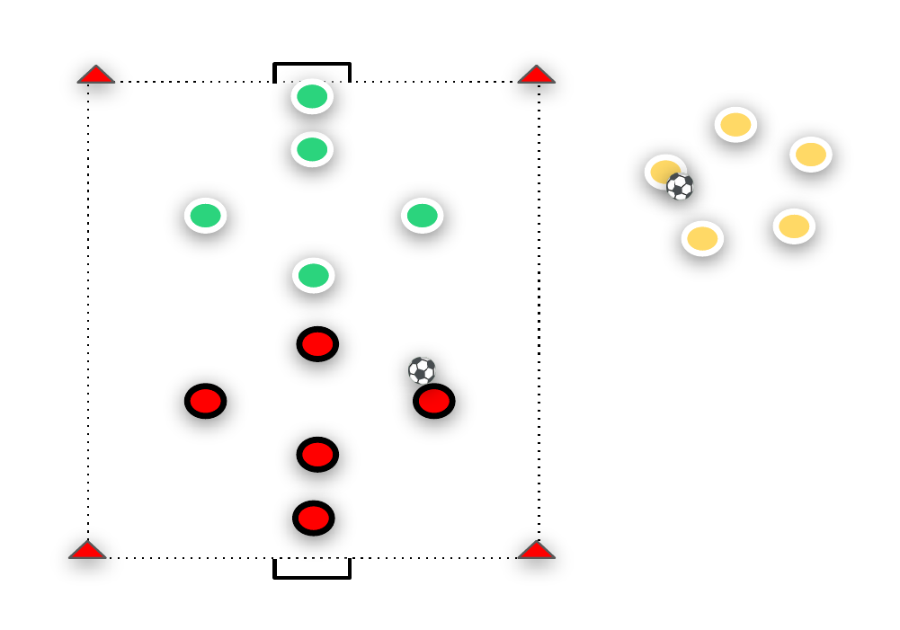

Beroende på hur många spelare som är på träningen så kan man
aktivera laget som står vid sidan av med
Ha förberedda lag sen innan, eller ställ barnen på ett led för att koordinationsövningar/spela 2v2 eller 3v3/låta dom passa/driva
dela in lag. För vissa kan det kännas skönt att hamna i samma till varandra. Är ni tillräckligt många spelare så rekommenderas
lag eller på samma plan som en kompis.
att köra 2 planer samtidigt.
Under matchen bör fokuset ligga på att ha kul och spela med Ha förståelse för att alla inte är vana vid att koncentrera sig på
Fotbollspsykologi varandra, inte på hur många mål som görs. en boll. Påminn snällt barnen om spelet om det behövs och
peppa på att vara med och spela. Turas om att vara målvakt. Få
Det är vanligt att barnen visar mycket känslor, t.ex. blir väldigt
alla att vara delaktiga
glada när de gör mål/”vinner” och blir ledsna när de släpper in
mål/“förlorar”. Avdramatisera situationen genom att förklara att Håll matcherna korta och pausa emellanåt för att dricka vatten
ibland vinner man och ibland förlorar man och att det är helt och prata om vad barnen tycker om exempelvis spelet.
okej. Här kan man byta lag om det skulle vara ojämnt eller bara för att
Om någon spelar för tufft eller inte beter sig schysst, ta barnet åt
barnen ska få spela i samma lag med andra på samma plan än
sidan och förklara vad som hände och säg vad barnet ska göra
istället. tidigare.
Orientering, Driva 15-20m, Komma till avslut, Brytning/Tackling